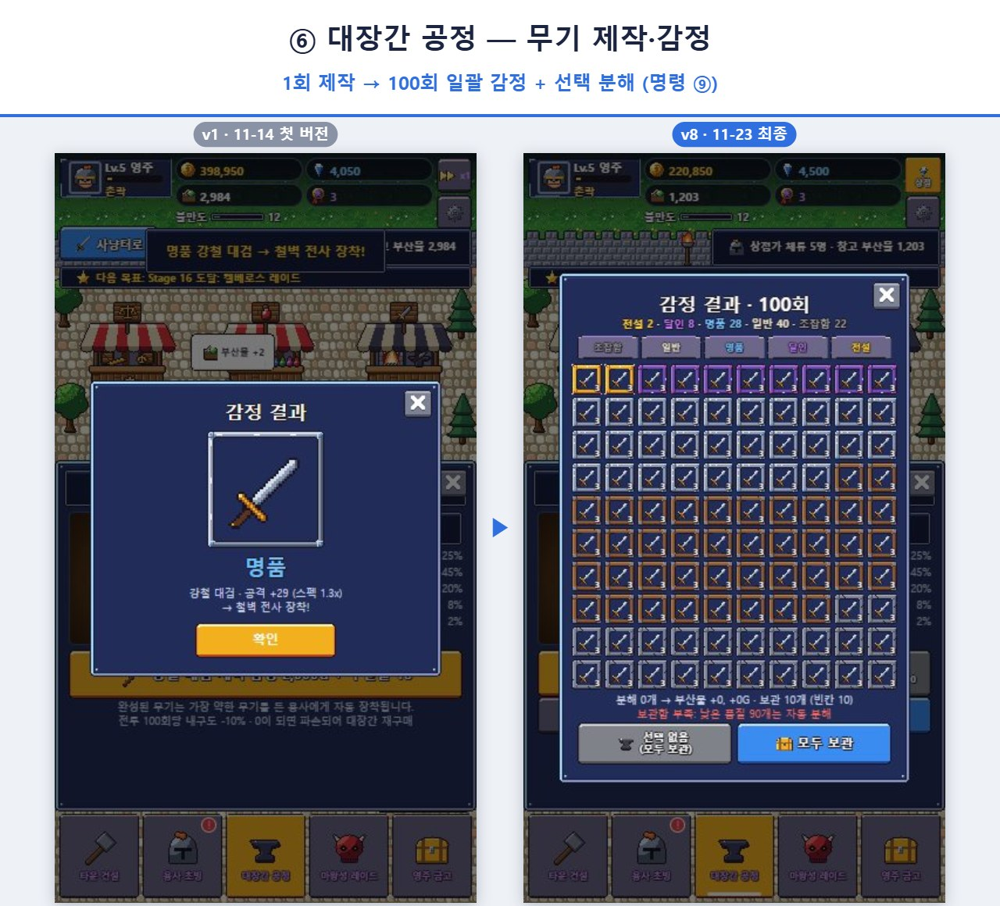
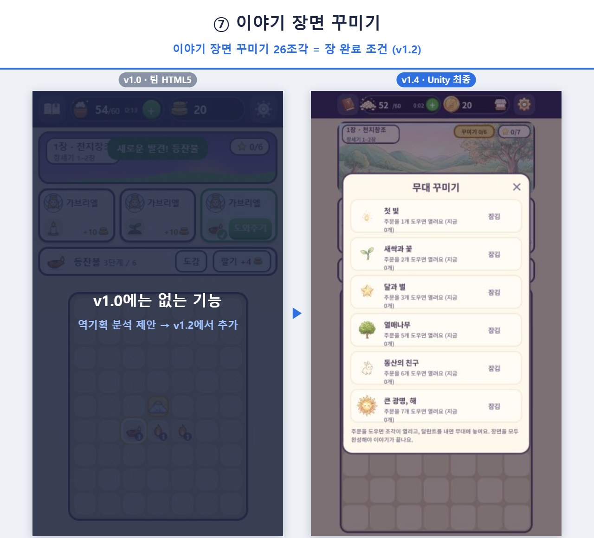
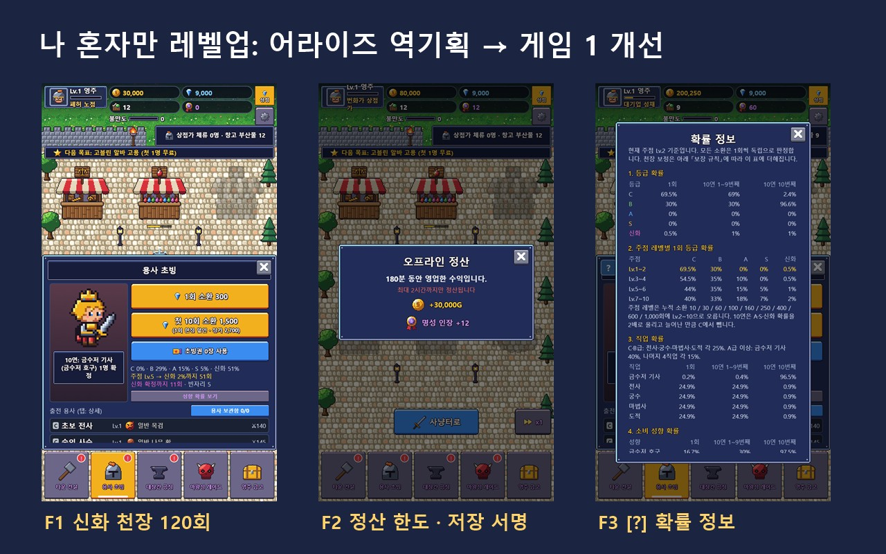

개인 프로젝트방치형 타이쿤 RPG
〈던전 앞 자본주의 상점가〉
초안 기획서 한 장에서 명령 20개로 웹·Android·Unity 게임을 만들고, 기획서 4종을 8개 버전으로 쌓은 기록
보기 →
팀 프로젝트 · 기획머지 퍼즐
〈바이블 머지〉
팀이 손그림으로 기획한 게임을 AI로 점검·밸런스 재설계·역기획 반영·그림 교체까지 이어 간 기록
보기 →
경쟁작 역기획 · 비교상점가 개선
어라이즈 역기획 → 상점가 개선
〈나 혼자만 레벨업: 어라이즈〉를 역기획해 18개 항목으로 비교하고, 신화 천장·정산 조작 방지·확률 정보를 고친 과정
보기 →